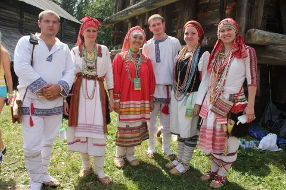
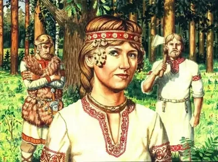

До прихода славян земли современной Московской области и всего центрального региона России населяли финно-угорские племена, в частности, меря (в междуречье Оки и Волги) и мещера (к юго-востоку, в Рязанско-Владимирском пограничье). Их культура, быт и хозяйственный уклад были идеально приспособлены к жизни в лесах и по берегам рек.
Финно-угорские племена

Меря и Мещера
Коренные народы центральной России, населявшие земли будущего Подмосковья до прихода славян. Их культура была тесно связана с природой и идеально приспособлена к жизни в лесах и речных долинах.
Основные занятия: Хозяйственный уклад
Жизнь этих племен была тесно связана с природой, что и определяло их основные занятия.
Земледелие и Скотоводство
Земледелие было подсечно-огневым. Мужчины вырубали и выжигали участок леса, а зола служила удобрением. На таких полях сеяли рожь, ячмень, овес, полбу и пшеницу.
Скотоводство играло важную роль. Разводили лошадей, коров, овец, коз и свиней. Лошадь была не только рабочим, но и культовым животным. Помимо мяса, получали молоко, шерсть и шкуры.
Охота, Рыболовство и Собирательство
Охота была источником пропитания и ценных товаров. В лесах добывали пушного зверя: куницу, бобра, лисицу, белку. Меха были главным продуктом для обмена (торговали с Волжской Булгарией и славянами). Охотились также на лося, оленя и кабана.
Рыболовство было крайне важным из-за обилия рек и озер. Ловили щуку, судака, сома, осетра и другую рыбу, используя сети, гарпуны и удочки.
Собирательство дополняло рацион: собирали грибы, ягоды (бруснику, клюкву), орехи и дикий мед.
Ремесла
Кузнечное дело
Меря и мещера славились как искусные металлурги. Они добывали болотную руду и выплавляли железо, изготавливая орудия труда (ножи, серпы, топоры) и оружие (наконечники стрел и копий).
Ювелирное дело
Владели техникой литья, создавая из бронзы и меди украшения с характерным "звериным стилем" — шумящие подвески, поясные бляшки, гривны.
Керамика
Лепили от руки горшки, украшая их "текстильными" отпечатками (следами от плетеной лопаточки, обмотанной нитками).
Обработка кости и дерева
Изготавливали всё необходимое для быта — посуду, инструменты, детали луков, украшения для жилищ.
Питание: Что ели меря и мещера?
- Основа рациона: Каши (ячменные, овсяные), рыба (варенная, вяленая), мясо домашних животных и дичи.
- Главный овощ: Репа (её парили, варили, пекли).
- Дополнение: Молочные продукты, грибы, ягоды, орехи, дикий мед.
- Напитки: Хмельные медовые напитки и квас.
Быт и Поселения
- Поселения (селища) располагались по берегам рек и озер. Жилищами служили бревенчатые срубные дома или полуземлянки с очагом в центре.
- Одежда была из льна, шерсти и кожи. Женский костюм отличался обилием металлических украшений, которые были не только красотой, но и оберегами.
- Верования были языческими. Они обожествляли силы природы, почитали духов леса, воды и дома. Важную роль играли шаманы.
Славяне (Вятичи, Кривичи)

Вятичи и Кривичи
Славяне (в основном племена вятичей и кривичей) начали проникать на земли современного Подмосковья в VIII-IX веках. Они приходили с запада и юго-запада, расселяясь по долинам рек — Москвы-реки, Клязьмы, Оки. Это была не завоевательная война, а постепенная мирная колонизация. Славяне селились рядом с финно-угорскими племенами (меря, мещера), что в итоге привело к их ассимиляции.
Быт и основные занятия
Земледелие
Было основой хозяйства. В отличие от подсечно-огневой системы аборигенов, славяне активно переходили на двуполье и трёхполье, что было эффективнее. Выращивали рожь, пшеницу, ячмень, овес.
Скотоводство
Разводили тех же животных, что и финно-угры: коров, овец, коз, свиней и лошадей.
Ремесла
Кузнечное дело
Изготавливали орудия труда (лемехи, косы, топоры) и оружие (мечи, наконечники копий).
Гончарное дело
Широко использовали гончарный круг, в отличие от местных племен. Это позволяло массово производить симметричную и прочную посуду.
Прядение и ткачество
Выращивали лен и коноплю для производства тканей.
Торговля
Была важным занятием. Через земли будущего Подмосковья проходили ключевые речные пути («из варяг в греки», волжский путь). Славяне активно торговали хлебом, мехами, медом и воском.
Быт
Жили в срубных избах, собранных из бревен. Поселения часто укрепляли валами и частоколами, превращая в городища. Носили рубахи, порты и сарафаны из домотканого полотна, украшенные вышивкой.
Заключение
Историческое развитие Московской области стало результатом многовекового взаимодействия и синтеза разных культур.
- Финно-угорские племена (меря, мещера) были автохтонным, то есть коренным, населением этого региона. Их хозяйственный уклад, идеально приспособленный к жизни в лесах и речных долинах, заложил первоначальную основу для освоения этих земель. Они были искусными охотниками, рыболовами и металлургами.
- Славяне (вятичи, кривичи), начавшие массово проникать сюда в VIII-IX веках, принесли с собой более развитое пашенное земледелие, гончарный круг и новые формы социальной организации. Их расселение носило в целом мирный, колонизационный характер.
В результате не завоевания, а постепенной ассимиляции и культурного обмена, к XI-XII векам сформировалось новое население, в котором слились обе традиции. Наследие финно-угров сохранилось в географических названиях (реки Яхрома, Клязьма), археологических находках и некоторых элементах материальной культуры, а славянский компонент определил язык, социальное устройство и дальнейший исторический путь этого региона, ставшего ядром современной России.